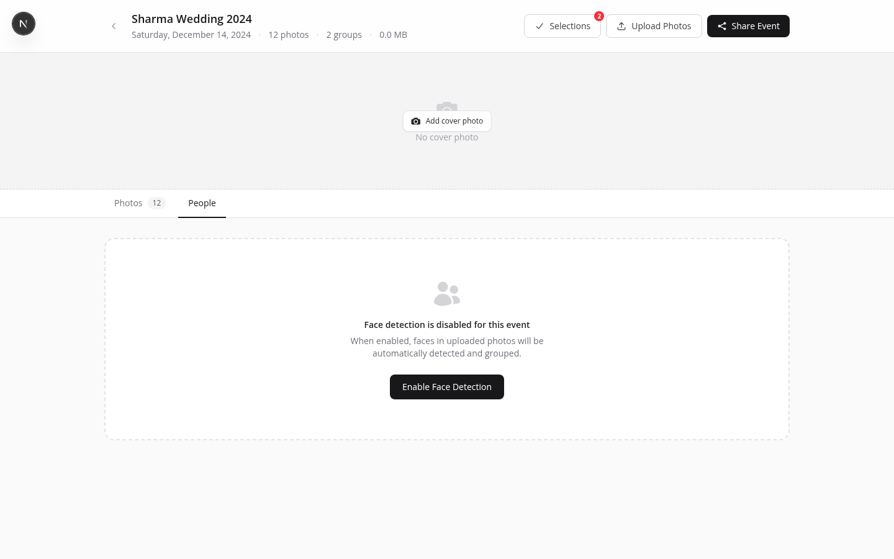

How AI Face Search Works
When you enable face detection on an event, PhotoHouse scans every photo and groups faces it finds. Clients can then upload a selfie to instantly find all their photos.
Under the hood, the process works like this:
-
Face detection
Each photo is analysed and every face in it is located using bounding box coordinates. A cropped thumbnail of each detected face is saved.
-
Embedding generation
A 512-dimension numerical vector (an "embedding") is computed for each face. This vector encodes the unique geometry of that face — spacing of eyes, shape of jaw, and so on.
-
Clustering
Embeddings that are mathematically similar are grouped into clusters. Each cluster represents one person. A 300-photo wedding might produce 15–40 clusters depending on how many unique faces appear.
-
Client search
When a client uploads a selfie, the same embedding process runs on their face. PhotoHouse compares it against every stored embedding in the event and returns the photos where that person appears.

All face detection and embedding runs on your own infrastructure. No photo or face data is sent to external AI providers like AWS Rekognition, Google Vision, or Azure Face.
Enabling Face Detection
Face detection is disabled by default on every event. To enable it:
-
Open the event and click the People tab
You'll see the "Face detection is disabled" empty state.
-
Click "Enable Face Detection"
PhotoHouse queues an indexing job and begins scanning photos immediately.
-
Wait for indexing to complete
A progress bar tracks how many photos have been analysed. For a 300-photo event on typical hardware, expect 1–3 minutes. For 800+ photos, allow 5–10 minutes.

Face indexing must be complete before you can turn on "Find My Photos" on a share link. Enable it as soon as you finish uploading, so it's ready when you create the client gallery link.
The People Tab
Once indexing completes, the People tab shows a grid of face cluster cards — one card per detected person. Each card shows the best face crop for that cluster and a count of how many photos they appear in.
Naming clusters
Click the pencil icon on any cluster card to assign a label — Bride, Groom, Uncle Raj, and so on. Labels are visible only to you in the People tab; clients never see cluster names.
Labelling isn't required for Find My Photos to work — it's purely an organisational aid for the photographer. Named clusters are useful when a client asks "Can you send me all the photos of the flower girl?" — you can click straight to that cluster.
Clicking into a cluster
Click any cluster card to open a full-screen view of all photos in which that person appears. From here you can open the photo lightbox, download individual shots, or navigate back to the cluster grid.
Hiding clusters
Toggle the visibility switch on a cluster to exclude it from client face search results. Hidden clusters remain visible to you in the People tab with a greyed-out appearance. Use this to exclude staff, vendors, or strangers who happened to walk into the frame — so clients don't accidentally find photos of people they don't know.
Customer Face Search (Find My Photos)
To enable Find My Photos on a gallery share link, open the Share modal for the event and toggle Allow Face Search before creating (or editing) the link. This toggle only appears if face detection is complete.

Client flow — step by step
-
Client opens the gallery
They enter their PIN or password as usual. A Find My Photos button appears in the toolbar (desktop) or as a floating button (mobile).
-
Client taps "Find My Photos"
A modal opens with a camera icon and instructions to upload a selfie.
-
Client uploads a selfie
They can take a new photo or choose one from their camera roll. The selfie doesn't need to be from the event — any clear photo of their face works.
-
PhotoHouse finds their photos
The gallery instantly filters to show only the photos in which that face appears. They can browse, select, and download these photos normally.
-
Clear the filter
Tapping Clear or Show all photos returns to the full gallery.

Privacy & Data
Each face search session has a 24-hour expiry. When the session expires, the uploaded selfie is removed from storage. The face embeddings computed from event photos are stored per-event and are never used to match faces across different events or photographers.
What is stored and for how long
- Face embeddings from event photos — stored in the database as long as face detection is enabled for the event. Deleted immediately when you click "Delete All Face Data".
- Cropped face thumbnails — small crop images stored in S3, used to display cluster cards. Deleted with face data.
- Client selfies — stored in S3 only during the search session. Automatically deleted after 24 hours regardless of whether the session was completed.
- Search session records — the matched photo ID list stored temporarily. Expires after 24 hours.
Deleting all face data
At the bottom of the People tab, click Delete All Face Data and confirm. This removes all embeddings, cluster records, face thumbnails, and any active search sessions for the event. The original photos in the gallery are unaffected. Face detection can be re-enabled afterwards.
Plan Requirements
Free accounts can view the People tab, but the "Enable Face Detection" button is locked. Clicking it opens an upgrade prompt. Visit the Billing & Plans page to compare plans and upgrade.
| Feature | Free | Pro | Studio |
|---|---|---|---|
| Face indexing (Enable Face Detection) | ✗ | ✓ | ✓ |
| People tab & cluster management | ✗ | ✓ | ✓ |
| Find My Photos on share links | ✗ | ✓ | ✓ |
| Monthly client searches | — | 100 | Unlimited |